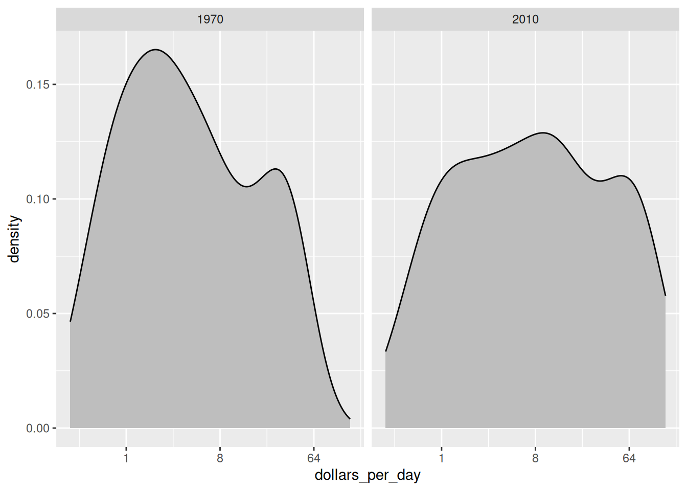

Module 9 Data visualization using ggplot
This module considers visualization of your data using the ggplot2 package which is a part of tidyverse. R has several systems for making plots, but ggplot2 is one of the most elegant and most versatile. Using ggplot2 you can do more faster by learning one system and applying it in many places.
9.1 Learning outcomes
By the end of this module, you are expected to:
- Know how to create basic plots using ggplot.
- Formulate the ideas behind the grammar of graphics.
- Explain the idea behind aesthetics such as color, fill and line type.
- Add geometries to a plot such as a histogram, a boxplot, a barplot, a scatter plot and a line.
- Understand how themes can be used to modify the overall look of a plot.
- Combine multiple plots into a single graphic.
- Save plots as variables and different image files.
The learning outcomes relate to the overall learning goals number 7, 11-14 and 18 of the course.
9.2 Introduction to data visualization
The package ggplot2 is a plotting package that makes it simple to create complex plots from data in a data frame. It provides an interface for specifying what variables to plot, how they are displayed, and general visual properties. Hence only minimal changes are needed if the underlying data change or if we decide to change from a bar plot to a scatterplot.
The package implements the grammar of graphics, a coherent system for describing and building layered plots. A plot is built step by step by adding new layers. Adding layers in this fashion allows for extensive flexibility and customization of plots.
An excellent introduction to data visualization using ggplot2 is given in the interactive DataCamp course Introduction to data visualization with ggplot2. Please complete the course before continuing.
Note that there is a difference between using the pipe %>% operator which passes the output of the previous line of code as the first input of the next line of code and the + operator used between ggplot2 functions for “layering”. That is, you create the plot in layers, separated by +.
9.3 Combining plots into one using patchwork
You can combine separate ggplots into the same graphic using the patchwork package. You can install patchwork from CRAN using install.packages('patchwork').
The usage is simple. Plots in two rows:
library(ggplot2)
library(patchwork)
p1 <- ggplot(mtcars) + geom_point(aes(mpg, disp))
p2 <- ggplot(mtcars) + geom_boxplot(aes(gear, disp, group = gear))
p1 + p2
The package provides rich support for arbitrarily complex layouts. Code for nesting three plots on top of a third:
p3 <- ggplot(mtcars) + geom_smooth(aes(disp, qsec))
p4 <- ggplot(mtcars) + geom_bar(aes(carb))
(p1 | p2 | p3) /
p4
For further examples see the documentation pages.
9.4 Saving graphics
In general when you do anlytics using R Markdown, there is no need to save your graphics. This is done automatically. However, in a few cases you may need to save you graphics in different formats. Let us consider a simple plot:
library(tidyverse)
p <- ggplot(mpg, aes(displ, hwy, colour = class)) +
geom_point()
p # print it out
To save the plot as a bitmap image (png, jpeg etc) have a look at the documentation (?png). Let us try to save the plot as a png file.
png("test1.png") # open png device for writing
p
dev.off() # close device
#> quartz_off_screen
#> 2
png("test2.png", width = 1200, height = 600) # use other output width and height in px
p
dev.off()
#> quartz_off_screen
#> 2
png("test3.png", width = 1200, height = 900) # save a patchwork plot
(p1 | p2 | p3) /
p4
dev.off()
#> quartz_off_screen
#> 2
# browseURL("test1.png") # to have a look at the file
# browseURL("test3.png") # to have a look at the fileTo save the plot as a pdf use
pdf("test1.pdf") # open pdf device for writing
p
dev.off() # close device
#> quartz_off_screen
#> 2
# browseURL("test1.pdf") # to have a look at the fileIf you use LaTeX you may use the tikzDevice package to save plots as TikZ.
9.5 Different learning paths
We are all different and you may like different learning styles compared to others. You may prefer a different learning path than suggested. Here is a list of possible different learning paths that may be useful for you.
- A detailed introduction to visualization using ggplot2 is given in Chapters 22-29 in Bryan (2017).
- A short introduction is given in Chapter 3 in Wickham (2017).
- The ‘Data visualization with ggplot2’ cheatsheet is very useful. Find the newest version in RStudio Help > Cheatsheets.
- A good place to see examples are on the main reference page. Follow the link to the function of interest and have a look at the examples.
- Further advanded possibilities for ggplot2 are given in the interactive DataCamp course Intermediate Data Visualization with ggplot2.
9.6 Recap
The tidyverse package ggplot2 is an R package for producing data visualizations. It is based on the Grammar of Graphics by Wilkinson (2005).
The grammar of graphics is a coherent system for describing and building layered plots.
- Graphics are made by grammatical elements such as data, aesthetics, geometries, scales, facets and themes.
- Plots are made though aesthetic mappings. That is, variables are mapped to x or y position using aesthetics attributes such as color, shape, or size.
- A plot is built step by step by adding new layers. Adding layers in this fashion allows for extensive flexibility and customization of plots.
- Together, the data, aesthetic mappings, and geometric object form a layer.
- A plot may have multiple layers, for example, when we overlay a scatterplot with a smoothed line.
Aesthetics are add in
ggplotusing theaesfunction or alternatively ingeom_functions.Geometries (e.g. a boxplot or line) are added to a plot using the
geom_functions.Themes can be applied to the plot using the
theme_functions and control all the non-data ink used to modify the overall look of a plot.Separate ggplots can be combined into the same graphic using the patchwork package.
Save plots as variables and different image files using the device functions such as
pngandpdf.The pipe
%>%operator is used to “pipe” the output of the previous line of code as the first input of the next line of code.The
+operator in ggplot2 functions is used for “layering”. This means you create the plot in layers, separated by+.
9.7 Exercises
Below you will find a set of exercises. Always have a look at the exercises before you meet in your study group and try to solve them yourself. Are you stuck, see the help page. Solutions to each exercise can be seen by pressing the button at each question. Beware, you will not learn by giving up to early. Put some effort into finding a solution!
9.7.1 Exercise (gapminder)
Use the exercise R markdown template to solve this exercise (File > New File > R Markdown…, select From template and then TFA Exercise).
In this exercise, we will demonstrate how relatively simple ggplot2 code can create insightful and aesthetically pleasing plots. As motivation we will create plots that help us better understand trends in world health and economics.
Hans Rosling was the co-founder of the Gapminder Foundation, an organization dedicated to educating the public by using data to dispel common myths about the so-called developing world. Hans Rosling conveyed actual data-based trends in a dramatic way of his own, using effective data visualization. Here we will try to answer two questions:
- Is it a fair characterization of today’s world to say it is divided into western rich nations and the developing world in Africa, Asia, and Latin America?
- Has income inequality across countries worsened during the last 40 years?
To answer these questions, we will be using the gapminder dataset provided in the dslabs package. This dataset was created using a number of spreadsheets available from the Gapminder Foundation. You can access the table like this:
library(tidyverse)
library(dslabs)
data(gapminder)
gapminder %>% as_tibble()
#> # A tibble: 10,545 x 9
#> country year infant_mortality life_expectancy fertility population gdp continent region
#> <fct> <int> <dbl> <dbl> <dbl> <dbl> <dbl> <fct> <fct>
#> 1 Albania 1960 115. 62.9 6.19 1636054 NA Europe Souther…
#> 2 Algeria 1960 148. 47.5 7.65 11124892 1.38e10 Africa Norther…
#> 3 Angola 1960 208 36.0 7.32 5270844 NA Africa Middle …
#> 4 Antigua … 1960 NA 63.0 4.43 54681 NA Americas Caribbe…
#> 5 Argentina 1960 59.9 65.4 3.11 20619075 1.08e11 Americas South A…
#> 6 Armenia 1960 NA 66.9 4.55 1867396 NA Asia Western…
#> 7 Aruba 1960 NA 65.7 4.82 54208 NA Americas Caribbe…
#> 8 Australia 1960 20.3 70.9 3.45 10292328 9.67e10 Oceania Austral…
#> 9 Austria 1960 37.3 68.8 2.7 7065525 5.24e10 Europe Western…
#> 10 Azerbaij… 1960 NA 61.3 5.57 3897889 NA Asia Western…
#> # … with 10,535 more rowsWe start by testing our knowledge regarding differences in child mortality across different countries. For each of the six pairs of countries below, which country do you think had the highest child mortality rates in 2015? Which pairs do you think are most similar?
- Sri Lanka or Turkey
- Poland or South Korea
- Malaysia or Russia
- Pakistan or Vietnam
- Thailand or South Africa
When answering these questions without data, the non-European countries are typically picked as having higher child mortality rates: Sri Lanka over Turkey, South Korea over Poland, and Malaysia over Russia. It is also common to assume that countries considered to be part of the developing world: Pakistan, Vietnam, Thailand, and South Africa, have similarly high mortality rates.
To answer these questions with data, we can use dplyr. For example, for the first comparison we see that:
gapminder %>%
filter(year == 2015 & country %in% c("Sri Lanka","Turkey")) %>%
select(country, infant_mortality)
#> country infant_mortality
#> 1 Sri Lanka 8.4
#> 2 Turkey 11.6Turkey has the higher infant mortality rate.
We can use this code on all comparisons and find the following:| country | infant mortality | country | infant mortality |
|---|---|---|---|
| Sri Lanka | 8.4 | Turkey | 11.6 |
| Poland | 4.5 | South Korea | 2.9 |
| Malaysia | 6.0 | Russia | 8.2 |
| Pakistan | 65.8 | Vietnam | 17.3 |
| Thailand | 10.5 | South Africa | 33.6 |
We see that the European countries on this list have higher child mortality rates: Poland has a higher rate than South Korea, and Russia has a higher rate than Malaysia. We also see that Pakistan has a much higher rate than Vietnam, and South Africa has a much higher rate than Thailand. It turns out that when Hans Rosling gave this quiz to educated groups of people, the average score was less than 2.5 out of 5, worse than what they would have obtained had they guessed randomly. This implies that we are misinformed. We will try to use visualization to help us being more informed.
The west vs the developing world
There is a preconceived notion that the world is divided into two groups: the western world (Western Europe and North America), characterized by long life spans and small families, versus the developing world (Africa, Asia, and Latin America) characterized by short life spans and large families. But do the data support this dichotomous view?
Solution
filter(gapminder, year == 1962) %>%
ggplot( aes(fertility, life_expectancy, color = continent)) +
geom_point() 
Most points fall into two distinct categories:
- Life expectancy around 70 years and 3 or fewer children per family.
- Life expectancy lower than 65 years and more than 5 children per family.
- Countries are from the regions we expect.
- Make a scatterplot of life expectancy versus fertility rates (average number of children per woman) in 1962. Use continent as color aesthetic.
Solution
filter(gapminder, year %in% c(1962, 2012)) %>%
ggplot(aes(fertility, life_expectancy, col = continent)) +
geom_point() +
facet_grid(cols = vars(year))
This plot clearly shows that the majority of countries have moved from the developing world cluster to the western world one. In 2012, the western versus developing world view no longer makes sense. This is particularly clear when comparing Europe to Asia, the latter of which includes several countries that have made great improvements.
- In 1962, “the West versus developing world” view was grounded in some reality. Is this still the case 50 years later? We could easily plot the 2012 data in the same way we did for 1962. To make comparisons, side by side plots are preferable. In ggplot2, we can achieve this by faceting variables and making a plot for each year. That is, you must filter by years 1962 and 2012 and add the layer
facet_grid, which automatically separates the plots.
Solution
years <- c(1962, 1970, 1980, 1990, 2000, 2012)
continents <- c("Europe", "Asia")
gapminder %>%
filter(year %in% years & continent %in% continents) %>%
ggplot( aes(fertility, life_expectancy, col = continent)) +
geom_point() +
facet_wrap(vars(year)) 
The plot clearly shows how most Asian countries have improved at a much faster rate than European ones.
- To explore the transformation through the years, make a plot for years 1962, 1970, 1980, 1990, 2000 and 2012 considering Europe and Asia. How has Asia transformed through the years compared to Europe? Since we consider many years, we will not want all the plots on the same row. Instead, we will want to use multiple rows and columns. The function
facet_wrappermits us to do this by automatically wrapping the series of plots.
Infobox - Scales
The default choice of the range of the axes is important. When not using facet, this range is determined by the data shown in the plot. When using facet, this range is determined by the data shown in all plots and therefore kept fixed across plots. This makes comparisons across plots much easier. For example, in the above plot, we can see that life expectancy has increased and the fertility has decreased across most countries. We see this because the cloud of points moves. This is not the case if we adjust the scales:

In the plot above, we have to pay special attention to the range to notice that the plot on the right has a larger life expectancy.
Solution
gapminder %>%
filter(continent == "Asia") %>%
ggplot(aes(fertility, life_expectancy, col = year)) +
geom_point()
#> Warning: Removed 47 rows containing missing values (geom_point).
- Illustrate the transformation for Asia using a single plot where use year as color aesthetic.
Time series plots
The visualizations above effectively illustrate that data no longer supports the western versus developing world view. Once we see these plots, new questions emerge. For example, which countries are improving more and which ones less? Was the improvement constant during the last 50 years or was it more accelerated during certain periods? For a closer look that may help answer these questions, we introduce time series plots.
Time series plots have time in the x-axis and an outcome or measurement of interest on the y-axis. For example, here is a trend plot of United States fertility rates:
gapminder %>%
filter(country == "United States") %>%
ggplot(aes(year, fertility)) +
geom_point()
We see that the trend is not linear at all. Instead there is sharp drop during the 1960s and 1970s to below 2. Then the trend comes back to 2 and stabilizes during the 1990s.
When the points are regularly and densely spaced, as they are here, we create curves by joining the points with lines, to convey that these data are from a single series, here a country. To do this, we use the geom_line function instead of geom_point.
Solution
gapminder %>%
filter(country == "United States") %>%
ggplot(aes(year, fertility)) +
geom_line()
#> Warning: Removed 1 row(s) containing missing values (geom_path).
- Make a lineplot showing the time series of fertility versus year for United States.
Solution
countries <- c("South Korea", "Germany")
gapminder %>% filter(country %in% countries) %>%
ggplot(aes(year, fertility, col = country)) +
geom_line()
#> Warning: Removed 2 row(s) containing missing values (geom_path).
The plot clearly shows how South Korea's fertility rate dropped drastically during the 1960s and 1970s, and by 1990 had a similar rate to that of Germany.
- Lineplots is particularly helpful when we look at more countries. Make a lineplot showing the time series of fertility versus year for South Korea and Germany. Use country as color aesthetic.
Solution
gapminder %>%
filter(country %in% countries) %>%
ggplot(aes(year, life_expectancy, col = country)) +
geom_line() 
The plot clearly shows how an improvement in life expectancy followed the drops in fertility rates. In 1960, Germans lived 15 years longer than South Koreans, although by 2010 the gap is completely closed. It exemplifies the improvement that many non-western countries have achieved in the last 40 years.
- Make a lineplot showing the time series of life expectancy versus year for South Korea and Germany. Use country as color aesthetic.
Data transformations
We now shift our attention to the second question related to the commonly held notion that wealth distribution across the world has become worse during the last decades. When general audiences are asked if poor countries have become poorer and rich countries become richer, the majority answers yes. By using stratification, histograms, smooth densities, and boxplots, we will be able to understand if this is in fact the case. First we learn how transformations can sometimes help provide more informative summaries and plots.
The gapminder data table includes a column with the countries’ gross domestic product (GDP). GDP measures the market value of goods and services produced by a country in a year. The GDP per person is often used as a rough summary of a country’s wealth. Here we divide this quantity by 365 to obtain the more interpretable measure dollars per day. Using current US dollars as a unit, a person surviving on an income of less than $2 a day is defined to be living in absolute poverty. We add this variable to the data table:
gapminder <- gapminder %>%
mutate(dollars_per_day = gdp/population/365)The GDP values are adjusted for inflation and represent current US dollars, so these values are meant to be comparable across the years. Of course, these are country averages and within each country there is much variability. All the graphs and insights described below relate to country averages and not to individuals.
Here is a histogram of per day incomes from 1970:
past_year <- 1970
gapminder %>%
filter(year == past_year & !is.na(gdp)) %>%
ggplot(aes(dollars_per_day)) +
geom_histogram(binwidth = 1, color = "black")
We use the color = "black" argument to draw a boundary and clearly distinguish the bins.
In this plot, we see that for the majority of countries, averages are below $10 a day. However, the majority of the x-axis is dedicated to the 35 countries with averages above $10. So the plot is not very informative about countries with values below $10 a day.
It might be more informative to quickly be able to see how many countries have average daily incomes of about $1 (extremely poor), $2 (very poor), $4 (poor), $8 (middle), $16 (well off), $32 (rich), $64 (very rich) per day. These changes are multiplicative and log transformations convert multiplicative changes into additive ones: when using base 2, a doubling of a value turns into an increase by 1.
Solution
gapminder %>%
filter(year == past_year & !is.na(gdp)) %>%
ggplot(aes(log2(dollars_per_day))) +
geom_histogram(binwidth = 1, color = "black")
This provides a close-up of the mid to lower income countries.
- Make a histogram of
log2(dollars_per_day)from 1970.
Infobox - Which base?
In the case above, we used base 2 in the log transformations. Other common choices are base \(\mathrm{e}\) (the natural log) and base 10.
In general, we do not recommend using the natural log for data exploration and visualization. This is because while \(2^2, 2^3, 2^4, \dots\) or \(10^2, 10^3, \dots\) are easy to compute in our heads, the same is not true for \(\mathrm{e}^2, \mathrm{e}^3, \dots\), so the scale is not intuitive or easy to interpret.
In the dollars per day example, we used base 2 instead of base 10 because the resulting range is easier to interpret. The range of the values being plotted is 0.327, 48.885.
In base 10, this turns into a range that includes very few integers: just 0 and 1. With base two, our range includes -2, -1, 0, 1, 2, 3, 4, and 5. It is easier to compute \(2^x\) and \(10^x\) when \(x\) is an integer and between -10 and 10, so we prefer to have smaller integers in the scale. Another consequence of a limited range is that choosing the binwidth is more challenging. With log base 2, we know that a binwidth of 1 will translate to a bin with range \(x\) to \(2x\).
For an example in which base 10 makes more sense, consider population sizes. A log base 10 is preferable since the range for these is:
filter(gapminder, year == past_year) %>%
summarize(min = min(population), max = max(population))
#> min max
#> 1 46075 8.09e+08Here is the histogram of the transformed values:
gapminder %>%
filter(year == past_year) %>%
ggplot(aes(log10(population))) +
geom_histogram(binwidth = 0.5, color = "black")
In the above, we quickly see that country populations range between ten thousand and ten billion.
There are two ways we can use log transformations in plots. We can log the values before plotting them or use log scales on the axes. Both approaches are useful and have different strengths. If we log the data, we can more easily interpret intermediate values in the scale. For example, if we see:
----1----x----2--------3----
for log transformed data, we know that the value of \(x\) is about 1.5. If the scales are logged:
----1----x----10------100---
then, to determine x, we need to compute \(10^{1.5}\), which is not easy to do in our heads. The advantage of using logged scales is that we see the original values on the axes. However, the advantage of showing logged scales is that the original values are displayed in the plot, which are easier to interpret. For example, we would see “32 dollars a day” instead of “5 log base 2 dollars a day”.
Solution
gapminder %>%
filter(year == past_year & !is.na(gdp)) %>%
ggplot(aes(dollars_per_day)) +
geom_histogram(binwidth = 1, color = "black") +
scale_x_continuous(trans = "log2")
The plot from Q8 is the same except the values on the x-axis.
- Make a histogram of
dollars_per_dayfrom 1970 using a log2 scale on the x-axis. Compare it to the plot from Question 8. Hint: you can use thescale_x_continuousfunction withtrans = "log2".
The histograms in Question 8 and 9 have two bumps: one at about 4 and another at about 32. In statistics these bumps are sometimes referred to as modes. The mode of a distribution is the value with the highest frequency. The mode of the normal distribution is the average. When a distribution, like the one above, doesn’t monotonically decrease from the mode, we call the locations where it goes up and down again local modes and say that the distribution has multiple modes indicating different distributions for different groups.
The histogram above suggests that the 1970 country income distribution has two modes: one at about 2 dollars per day (1 in the log 2 scale) and another at about 32 dollars per day (5 in the log 2 scale). However, the histogram does not show us if the two groups of countries are west versus the rest. Let us create the group column:
gapminder <- gapminder %>%
mutate(group = case_when(
region %in% c("Western Europe", "Northern Europe","Southern Europe",
"Northern America", "Australia and New Zealand") ~ "West",
TRUE ~ "Rest")) %>%
as_tibble()Solution
gapminder %>%
filter(year == past_year & !is.na(gdp)) %>%
ggplot(aes(dollars_per_day)) +
geom_histogram(binwidth = 1, color = "black") +
facet_grid(cols = vars(group)) +
scale_x_continuous(trans = "log2")
The plot confirms the west vs the rest dichotomy.
- Make a histogram of
dollars_per_dayfrom 1970 using a log2 scale and facet it by group. Is there a west versus the rest dichotomy?
The exploratory data analysis above has revealed two characteristics about average income distribution in 1970. Using a histogram, we found a bimodal distribution with the modes relating to poor and rich countries. We will try to visualize these summaries in one plot.
Solution
gapminder %>%
filter(year == past_year & !is.na(gdp)) %>%
ggplot(aes(group, dollars_per_day)) +
geom_boxplot() +
scale_y_continuous(trans = "log2") +
geom_point()
- Make a boxplot (
geom_boxplot) ofdollars_per_day(y-axis) versusgroup(x-axis) from 1970 using a log2 scale. Also add a the data usinggeom_point().
Data exploration clearly shows that in 1970 there was a “west versus the rest” dichotomy. But does this dichotomy persist? We first have to be a little careful here since there are more countries represented in 2010 than in 1970: the total counts are larger. One reason for this is that several countries were founded after 1970. For example, the Soviet Union divided into several countries during the 1990s. Another reason is that data was available for more countries in 2010. Hence we only have to consider the countries with data available for both years:
past_year <- 1970
present_year <- 2010
years <- c(past_year, present_year)
country_list_1 <- gapminder %>%
filter(year == past_year & !is.na(dollars_per_day)) %>%
pull(country)
country_list_2 <- gapminder %>%
filter(year == present_year & !is.na(dollars_per_day)) %>%
pull(country)
country_list <- intersect(country_list_1, country_list_2)We can now filter the rows by years and country_list.
Solution
gapminder %>%
filter(year %in% years & country %in% country_list) %>%
ggplot(aes(dollars_per_day)) +
geom_histogram(binwidth = 1, color = "black") +
scale_x_continuous(trans = "log2") +
facet_grid(year ~ group)
The income gap between rich and poor countries has narrowed considerably during the last 40 years
- Make a histogram of
dollars_per_dayfrom 1970 and 2010 using a log2 scale and facet it by group and year. Does the dichotomy persist?
Solution
gapminder %>%
filter(year %in% years & country %in% country_list) %>%
mutate(year = factor(year)) %>%
ggplot(aes(group, dollars_per_day, fill = year)) +
geom_boxplot() +
scale_y_continuous(trans = "log2") 
We now see that the rich countries have become a bit richer, but percentage-wise, the poor countries appear to have improved more. In particular, we see that the proportion of developing countries earning more than $16 a day increased substantially.
Make a boxplot of
dollars_per_dayversusgroupfrom 1970 and 2010 using a log2 scale. Use year as fill aesthetic.Hint: you must convert year to a factor using
mutate(year = factor(year)).
The previous data exploration suggested that the income gap between rich and poor countries has narrowed considerably during the last 40 years. We used a series of histograms and boxplots to see this. Let us now shift to density plots. Let’s start by noting that density plots for income distribution in 1970 and 2010 deliver the message that the gap is closing:
gapminder %>%
filter(year %in% years & country %in% country_list) %>%
ggplot(aes(dollars_per_day)) +
geom_density(fill = "grey") +
scale_x_continuous(trans = "log2") +
facet_grid(cols = vars(year))
In the 1970 plot, we see two clear modes: poor and rich countries. In 2010, it appears that some of the poor countries have shifted towards the right, closing the gap.
The next message we need to convey is that the reason for this change in distribution is that several poor countries became richer, rather than some rich countries becoming poorer. To do this, we can assign a color to the groups we identified during data exploration.
gapminder %>%
filter(year %in% years & country %in% country_list) %>%
ggplot(aes(dollars_per_day, fill = group)) +
scale_x_continuous(trans = "log2") +
geom_density(alpha = 0.2) +
facet_grid(cols = vars(year))
Note the default is to have the area represented by each distribution add up to 1, regardless of the size of each group: the number of countries in the ‘west’ group is 21 and in the ‘rest’ group is 87. We may use count on the y-axis instead:
p <- gapminder %>%
filter(year %in% years & country %in% country_list) %>%
ggplot(aes(dollars_per_day, y = ..count.., fill = group)) +
scale_x_continuous(trans = "log2", limit = c(0.125, 300)) +
facet_grid(cols = vars(year))
p + geom_density(alpha = 0.2) 
Solution
p + geom_density(alpha = 0.2, bw = 0.75)
This plot now shows that the developing world distribution is changing.
- To get densities smoother, use
bw = 0.75argument so that the same bandwidth is used in each density. Comment on the plot.
As a final point, we note that in these distributions weigh every country the same. So if most of the population is improving, but living in a very large country, such as China, we might not appreciate this. We can actually weight the smooth densities using the weight mapping argument. First we modify the dataset:
Solution
gapminder %>%
ggplot(aes(dollars_per_day, fill = group, weight = weight)) +
scale_x_continuous(trans = "log2", limit = c(0.125, 300)) +
geom_density(alpha = 0.2, bw = 0.75) +
facet_grid(cols = vars(year))
We now see that the rich countries have become a bit richer, but percentage-wise, the poor countries appear to have improved more. In particular, we see that the proportion of developing countries earning more than $16 a day increased substantially.
- Modify the ggplot function with a weight argument and plot the density (with area equal 1).
9.7.2 Exercise (profit)
Use the exercise R markdown template to solve this exercise (File > New File > R Markdown…, select From template and then TFA Exercise).
Consider the dataset profit (provided by the tfa package) containing quarterly financial records for each costumer, product, etc.:
library(tfa)
library(skimr)
glimpse(profit)
#> Rows: 24,546
#> Columns: 9
#> $ Quarter <dbl> 3, 1, 4, 1, 4, 3, 4, 3, 4, 1, 1, 3, 3, 3, 2, 2, 1, 2, 3, 2, 2, 2,…
#> $ Channel <chr> "ATM", "ATM", "ATM", "ATM", "ATM", "BRH", "BRH", "ATM", "BRH", "B…
#> $ `Customer ID` <chr> "FRT", "MRT", "PBI", "PBI", "MRT", "MAM", "PBI", "FRT", "PBI", "P…
#> $ Country <chr> "USA", "USA", "USA", "USA", "USA", "USA", "USA", "USA", "USA", "U…
#> $ `Product Line` <chr> "Credit Products", "Credit Products", "Deposit Products", "Deposi…
#> $ Revenue <dbl> 6044, 4686, 6063, 4682, 6320, 2993, 3355, 5716, 3347, 2624, 3629,…
#> $ `Product Cost` <dbl> 3998, 3229, 7440, 6127, 7913, 1034, 4355, 5617, 4229, 1960, 4650,…
#> $ `Customer Service Cost` <dbl> 413, 643, 1842, 1118, 1854, 242, 1027, 876, 425, 264, 700, 1482, …
#> $ Profit <dbl> 1633, 815, -3219, -2563, -3447, 1718, -2027, -777, -1307, 401, -1…
skim(profit)| Name | profit |
| Number of rows | 24546 |
| Number of columns | 9 |
| _______________________ | |
| Column type frequency: | |
| character | 4 |
| numeric | 5 |
| ________________________ | |
| Group variables | None |
Variable type: character
| skim_variable | n_missing | complete_rate | min | max | empty | n_unique | whitespace |
|---|---|---|---|---|---|---|---|
| Channel | 0 | 1 | 3 | 3 | 0 | 10 | 0 |
| Customer ID | 0 | 1 | 3 | 3 | 0 | 18 | 0 |
| Country | 0 | 1 | 3 | 14 | 0 | 47 | 0 |
| Product Line | 0 | 1 | 14 | 25 | 0 | 6 | 0 |
Variable type: numeric
| skim_variable | n_missing | complete_rate | mean | sd | p0 | p25 | p50 | p75 | p100 | hist |
|---|---|---|---|---|---|---|---|---|---|---|
| Quarter | 0 | 1 | 2.50 | 1.12 | 1 | 2 | 2 | 3 | 4 | ▇▇▁▇▇ |
| Revenue | 0 | 1 | 120.22 | 420.96 | 1 | 12 | 41 | 74 | 7540 | ▇▁▁▁▁ |
| Product Cost | 0 | 1 | 100.07 | 375.51 | 0 | 9 | 29 | 68 | 9256 | ▇▁▁▁▁ |
| Customer Service Cost | 0 | 1 | 17.42 | 67.43 | 0 | 1 | 5 | 12 | 1865 | ▇▁▁▁▁ |
| Profit | 0 | 1 | 2.71 | 154.89 | -4139 | -7 | 0 | 9 | 3664 | ▁▁▇▁▁ |
- Make a barplot that shows the total profitability of the product lines. Use the following steps:
a) Convert all character columns to factor columns.
Solution
profit %>%
group_by(`Product Line`) %>%
summarise(Profit = sum(Profit)) %>%
ggplot(aes(x = `Product Line`, y = Profit)) +
geom_col()
b) Group by product line, calculate the total profit and plot profit for each product line.
Solution
profit %>%
group_by(`Product Line`) %>%
summarise(Profit = sum(Profit)) %>%
ggplot(aes(x = reorder(`Product Line`, Profit), y = Profit)) +
geom_col()
c) Plot profit for each product line where product line is reordered based on total profit.
Solution
profit %>%
group_by(`Product Line`) %>%
summarise(Profit = sum(Profit)) %>%
ggplot(aes(x = reorder(`Product Line`, Profit), y = Profit)) +
geom_col() +
labs(title = "Total profit for each product line") 
d) Add a title to the plot using labs.
Solution
profit %>%
group_by(`Product Line`) %>%
summarise(Profit = sum(Profit)) %>%
ggplot(aes(x = reorder(`Product Line`, Profit), y = Profit)) +
geom_col() +
labs(title = "Total profit for each product line") +
xlab("Product line") +
theme(axis.text.x = element_text(angle = 90, vjust = 0.5, hjust=1))
e) Rotate the x-axis labels 90 degrees.
f) Which product line is best and worst?
Solution
profit %>%
group_by(`Product Line`, Quarter) %>%
summarise(Profit = sum(Profit)) %>%
ggplot(aes(x = reorder(`Product Line`, Profit), y = Profit)) +
geom_col() +
facet_grid(cols = vars(Quarter)) +
labs(title = "Total profit for each product line") +
xlab("Product Line") +
theme(axis.text.x = element_text(angle = 90, vjust = 0.5, hjust=1))
Some product lines have quite different earnings in different quarters.
- Make a barplot that shows the total profitability of the product lines in each quarter. Are there details we have missed in Question 1?
Solution
profit %>%
ggplot(aes(y = Profit, x = `Product Line`)) +
geom_boxplot() +
labs(title = "Profit for each product line") +
theme(axis.text.x = element_text(angle = 90, vjust = 0.5, hjust=1))
The profit varies more for three of the product lines.
- Make a boxplot of profitability of the product lines. Any insight?
Solution
profit %>%
group_by(`Customer ID`) %>%
summarise(Profit = sum(Profit)) %>%
ggplot(aes(x = reorder(`Customer ID`, Profit), y = Profit)) +
geom_col() +
labs(title = "Total profit for each customer") +
theme(axis.text.x = element_text(angle = 90, vjust = 0.5, hjust=1))
Lowest and highest total profit is for PBI and WEM, respectively.
- Make a barplot that shows the total profitability of the customers. Which customer is best and worst?
Solution
profit %>%
group_by(`Customer ID`) %>%
summarise(Profit = mean(Profit)) %>%
ggplot(aes(x = reorder(`Customer ID`, Profit), y = Profit)) +
geom_col() +
labs(title = "Mean profit for each customer") +
theme(axis.text.x = element_text(angle = 90, vjust = 0.5, hjust=1))
Since the number of transactions are not the same, the order of customers will not be the same.
- Make a barplot that shows the mean profitability of the customers. Which customer is best and worst? Compare against Question 4 and discuss.
- Make a plot illustrating number of transactions for each customer. Use total profit as fill atheistic.
Solution
profit %>%
ggplot(aes(y = Profit, x = `Customer ID`)) +
geom_boxplot() +
labs(title = "Profit for each customer") +
theme(axis.text.x = element_text(angle = 90, vjust = 0.5, hjust=1))
- Make a boxplot illustrating the profit for each customer.
9.7.3 Exercise (COVID-19)
Use the exercise R markdown template to solve this exercise (File > New File > R Markdown…, select From template and then TFA Exercise).
Countries around the world are responding to an outbreak of respiratory illness caused by a novel corona virus, COVID-19. The outbreak first started in Wuhan, China, but cases have been identified in a growing number of other locations internationally, including the United States. In this report we explore how the trajectory of the cumulative deaths in a number of countries.
The data come from the coronavirus package, which pulls data from the Johns Hopkins University Center for Systems Science and Engineering (JHU CCSE) Corona virus repository. The corona virus package provides a tidy format dataset of the 2019 Novel Corona virus COVID-19 (2019-nCoV) epidemic. The package is available on GitHub here and is updated daily.
First load the following packages:
# devtools::install_github("RamiKrispin/coronavirus", dependencies = FALSE)
library(coronavirus)
library(tidyverse)
library(lubridate) # package for handling datesThe data frame called coronavirus in the coronavirus package provides a daily summary of the Corona virus (COVID-19) cases by country. Each row in the data frame represents a country (or, where relevant, state/province). Note that the data provided in this package provides daily number of deaths, confirmed cases, and recovered cases. We calculate the total number of cases per day, cumulative numbers and days since first record:
dat <- coronavirus %>%
group_by(country, date, type) %>%
summarise(tot_cases = sum(cases)) %>%
group_by(country, type) %>%
arrange(date) %>%
mutate(cumulative_cases = cumsum(tot_cases)) %>%
ungroup() %>%
mutate(
days_elapsed = as.numeric(date - min(date)),
year = year(date)
) %>% print()
#> # A tibble: 157,626 x 7
#> country date type tot_cases cumulative_cases days_elapsed year
#> <chr> <date> <chr> <int> <int> <dbl> <dbl>
#> 1 Afghanistan 2020-01-22 confirmed 0 0 0 2020
#> 2 Afghanistan 2020-01-22 death 0 0 0 2020
#> 3 Afghanistan 2020-01-22 recovered 0 0 0 2020
#> 4 Albania 2020-01-22 confirmed 0 0 0 2020
#> 5 Albania 2020-01-22 death 0 0 0 2020
#> 6 Albania 2020-01-22 recovered 0 0 0 2020
#> 7 Algeria 2020-01-22 confirmed 0 0 0 2020
#> 8 Algeria 2020-01-22 death 0 0 0 2020
#> 9 Algeria 2020-01-22 recovered 0 0 0 2020
#> 10 Andorra 2020-01-22 confirmed 0 0 0 2020
#> # … with 157,616 more rowsSolution
dat %>%
group_by(date, type) %>%
summarise(tot_cases = sum(tot_cases)) %>% print() %>%
ggplot(aes(x = date, y = tot_cases)) +
geom_col() +
facet_grid(rows = vars(type), scales = "free") +
labs(
title = "Number of Covid 19 cases per day",
y = "cases"
)
#> # A tibble: 834 x 3
#> # Groups: date [278]
#> date type tot_cases
#> <date> <chr> <int>
#> 1 2020-01-22 confirmed 555
#> 2 2020-01-22 death 17
#> 3 2020-01-22 recovered 28
#> 4 2020-01-23 confirmed 99
#> 5 2020-01-23 death 1
#> 6 2020-01-23 recovered 2
#> 7 2020-01-24 confirmed 287
#> 8 2020-01-24 death 8
#> 9 2020-01-24 recovered 6
#> 10 2020-01-25 confirmed 493
#> # … with 824 more rows
- Calculate and plot the number of confirmed, death and recovered cases per day given date using
facet_gridandgeom_col.
Consider the following set of countries:
countries <- c(
"China",
"France",
"Denmark",
"US",
"Italy"
)Solution
dat %>%
filter(type == "death", country %in% countries) %>%
ggplot(aes(x = days_elapsed,
y = cumulative_cases,
color = country)) +
geom_line() +
theme(legend.position = "bottom") +
labs(
x = str_c("Days since ", min(dat$date)),
y = "Cumulative number of deaths",
title = "Cumulative deaths from COVID-19, selected countries"
)
- Plot a lineplot of the cumulative number of deaths as a function of days elapsed for the selected countries. Use country as color aesthetic.
Since the countries have different population sizes we would like to calculate some numbers relative to the population size. First we need population sizes for each country. They are given in the dataset world_pop in the tfa package:
world_pop <- tfa::world_pop %>%
filter(country %in% countries) %>%
print()
#> # A tibble: 1,505 x 3
#> country year pop
#> <chr> <dbl> <dbl>
#> 1 China 1800 321675013
#> 2 China 1801 324408862
#> 3 China 1802 327165946
#> 4 China 1803 329946461
#> 5 China 1804 332750607
#> 6 China 1805 335578586
#> 7 China 1806 338430598
#> 8 China 1807 341306850
#> 9 China 1808 344207546
#> 10 China 1809 347132894
#> # … with 1,495 more rowsWe can join the datasets using:
dat <- dat %>%
filter(country %in% countries) %>%
left_join(world_pop) %>%
print()
#> # A tibble: 4,170 x 8
#> country date type tot_cases cumulative_cases days_elapsed year pop
#> <chr> <date> <chr> <int> <int> <dbl> <dbl> <dbl>
#> 1 China 2020-01-22 confirmed 548 548 0 2020 1424548266
#> 2 China 2020-01-22 death 17 17 0 2020 1424548266
#> 3 China 2020-01-22 recovered 28 28 0 2020 1424548266
#> 4 Denmark 2020-01-22 confirmed 0 0 0 2020 5796800
#> 5 Denmark 2020-01-22 death 0 0 0 2020 5796800
#> 6 Denmark 2020-01-22 recovered 0 0 0 2020 5796800
#> 7 France 2020-01-22 confirmed 0 0 0 2020 65721165
#> 8 France 2020-01-22 death 0 0 0 2020 65721165
#> 9 France 2020-01-22 recovered 0 0 0 2020 65721165
#> 10 Italy 2020-01-22 confirmed 0 0 0 2020 59132073
#> # … with 4,160 more rows
any(is.na(dat)) # check if any missing values
#> [1] FALSE- Calculate
tot_cases_popas number of cases per 100000 inhabitants. That is, total cases divided by population and multiplied by 100000.
Solution
dat %>%
filter(date >= today() - days(21), type == "confirmed") %>%
ggplot(aes(x = date, y = tot_cases_pop, fill = country)) +
geom_col(position = position_dodge2())
- Plot the number of confirmed cases per 100000 inhabitants for the last 21 days. Use country as fill aesthetic.
Solution
dat %>%
filter(date >= today() - days(14), country == "Denmark", type == "confirmed") %>%
ggplot(aes(x = date, y = tot_cases_pop)) +
geom_col()
- Plot the number of confirmed cases per 100000 inhabitants in Denmark for the last 14 days.
References
Bryan, J. 2017. STAT 545 - Data Wrangling, Exploration, and Analysis with R. https://stat545.com/.
Wickham, H. 2017. R for Data Science. O’Reilly. https://r4ds.had.co.nz/.
Wilkinson, Leland. 2005. The Grammar of Graphics (Statistics and Computing). Springer-Verlag.